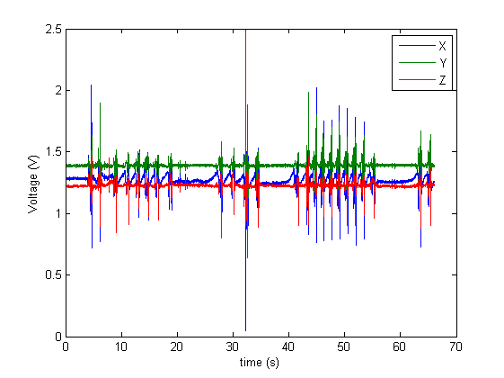
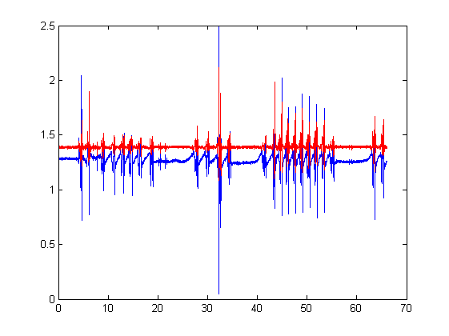
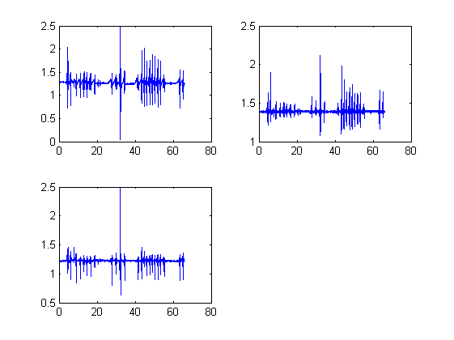
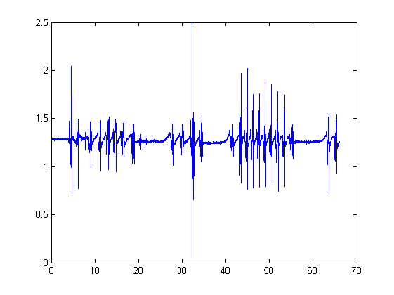
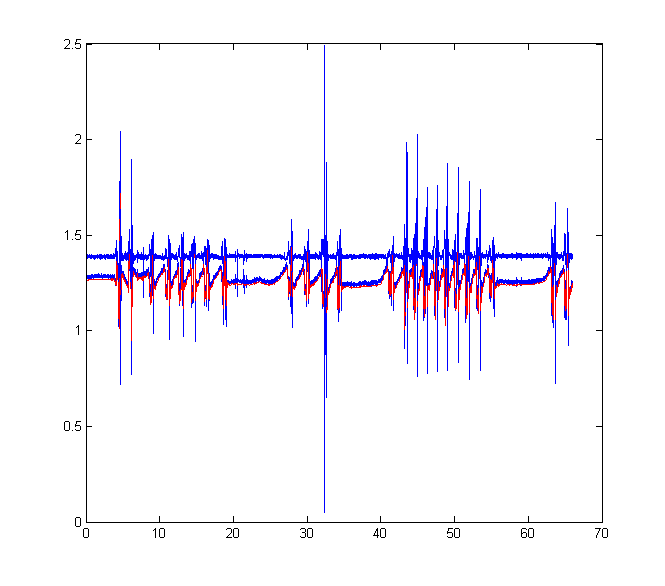
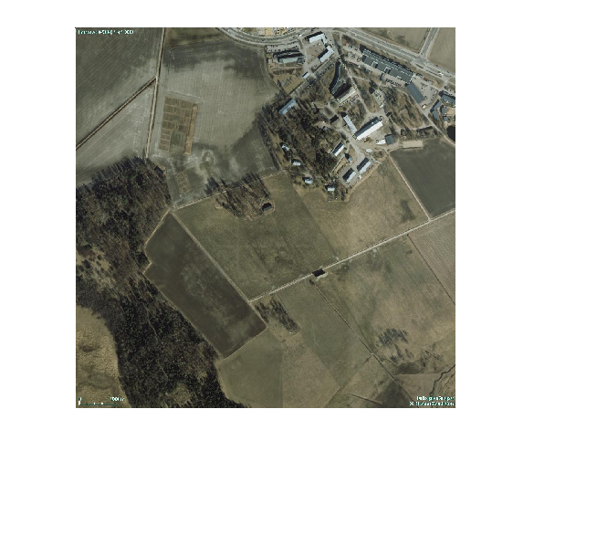
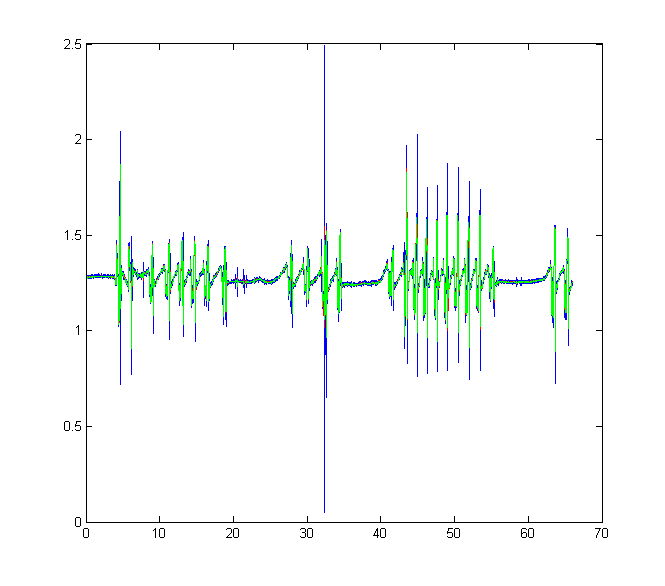
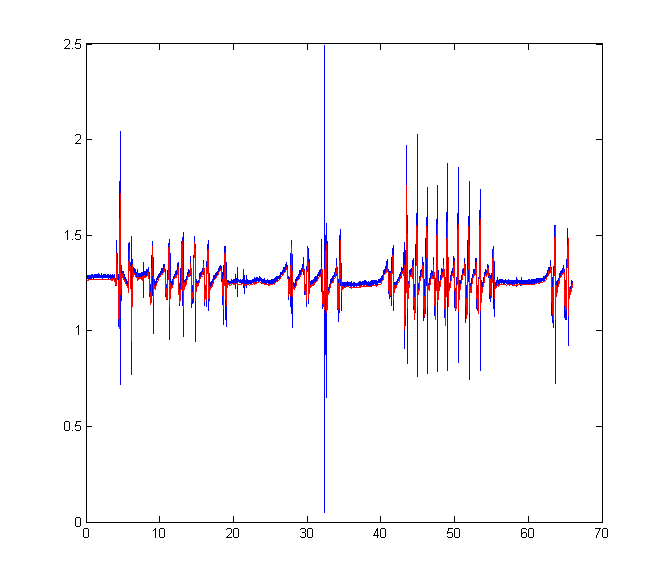

Short Introduction to MATLAB for Agtek481
Matti Pastell 19.2.2013
This only a very short intro, I have written a longer one in Finnish: Matlab-opas and YAGTOM is a much better English guide.
Contents
Importing data
Clear workspace
clear; clc;
MATLAB binary format
Matlab has its own format (".mat") that is very convinient and can save the entire workspace, but most other programs can't read it. You can simply use the format with load and save commands.
%Load a .mat file from the current directory, it contains variable |kavely| load('kavely.mat')
Working with text files
%You can use a dataset array to read text files in Matlab walk = dataset('File', 'walking.txt', 'ReadVarNames', false); walk.Properties.VarNames = {'Date', 'Time', 'X', 'Y', 'Z'};
Excel files
%Read in worksheet called field_corr field_corr = xlsread('Exercise_6_data.xls', 'field_corr');
Images
fieldImage = imread('Exercise_6_map.jpeg');
Basic operations
See: http://yagtom.googlecode.com/svn/trunk/html/matrixOperations.html
Indexing Extract first column to X etc.
X = kavely(:, 1); Y = kavely(:, 2); Z = kavely(:, 3);
Basic calculations
average = mean(kavely); total = sum(kavely); stdev = std(kavely); %Add too vectors together sumXY = X + Y; %Scale X to zero mean and unit variance Xzero = X - mean(X); Xscaled = Xzero/std(Xzero);
Loops
Calculate the difference between two elements of X
n = length(X); for i=2:n Xdiff(i-1) = X(i) - (X(i-1)); end %Do the same without a loop Xdiff2 = diff(X);
Plotting
See also: http://yagtom.googlecode.com/svn/trunk/html/plotting.html
Time series
%Plot a whole array plot(kavely) %Make a time axis in seconds n = size(kavely, 1); %Sample rate is 250Hz t = linspace(0, n/250, n); %Plot with time and labels, use export setup from figure menu to save plot(t, kavely); xlabel('time (s)') ylabel('Voltage (V)') legend('X', 'Y', 'Z')
Plot several variables in same figure
plot(t, X) hold on plot(t, Y, 'r') hold off
Subplots
subplot(221) plot(t, X) subplot(222) plot(t, Y) subplot(223) plot(t, Z)
Several figures at the same time
figure(1) plot(t, X) figure(2) plot(t, Y) 
Image
imshow(fieldImage)
Warning: Image is too big to fit on screen; displaying at 50%
Signal processing
Use the sptool for filters and spectrum to learn the concepts
Moving average and median filter
maX = smooth(X, 9); medX = medfilt1(X, 9); plot(t, X) hold on plot(t, maX, 'r'); hold on plot(t, medX, 'g'); hold off
Decimation Decrease the sample rate of x to 10th of original and create new time axis for plotting
X10 = decimate(X, 10); n = size(X10, 1); t10 = linspace(0, n/25, n); %25Hz is the decimated sample rate % Plot the original data and decimated data plot(t, X) hold on plot(t10, X10, 'r')